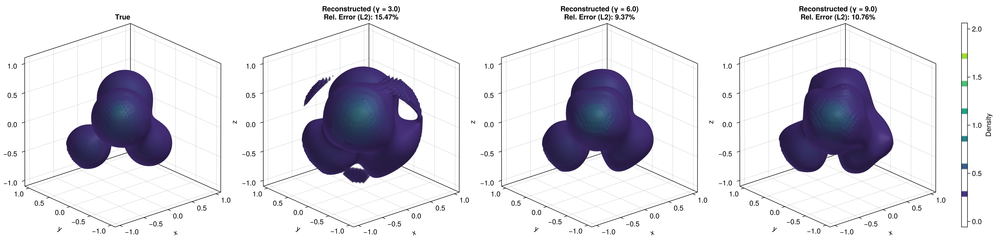

Noisy 3D Reconstruction
Continuing to previous tutorials, this tutorial demonstrates how to estimate the 3D function, but now with measurement noise and functional randomness.
Data Generation
Setup Global Parameters
n = 100 # Number of sample paths (functions)
r = 5 # Number of quaternions
s = 20 # Number of evaluation points per viewing angles
m = 50 # Resolution for reconstruction
L = 4 # Number of Gaussian components in the phantom
λ = 0.2 # Covariance level for weights
σ = 0.01 # Noise level
gamma_list = [3.0, 6.0, 9.0] # Kernel bandwidths for RKHS framework3D Phantom and X-ray Transform
using HeteroTomo3D, BlockArrays, LinearAlgebra
centers = [
(0.3, 0.3, 0.3),
(-0.3, -0.3, 0.3),
(-0.4, 0.4, -0.4),
(0.3, -0.3, -0.3)
]
gammas = [5.0, 4.0, 6.0, 4.0] .* 2
# Draw random weights
mean_vec = [1.0, 0.8, 0.6, 0.4] .* 2
cov_matrix = λ * I(L) # Isotropic covariance for simplicity
Random.seed!(42)
weights = rand(MvNormal(mean_vec, cov_matrix), n) # Size: (L, n)
phantom = KernelPhantom3D(weights, centers, gammas)
# Evaluate dense 3D phantom
function evaluate_phantom(w_vec, centers, gammas, m)
F = zeros(Float64, m, m, m)
for iz in 1:m, iy in 1:m, ix in 1:m
z1 = 2.0 * (ix - 1) / (m - 1) - 1.0
z2 = 2.0 * (iy - 1) / (m - 1) - 1.0
z3 = 2.0 * (iz - 1) / (m - 1) - 1.0
if z1^2 + z2^2 + z3^2 <= 1.0
val = 0.0
for l in eachindex(centers)
c = centers[l]
dist2 = (z1 - c[1])^2 + (z2 - c[2])^2 + (z3 - c[3])^2
val += w_vec[l] * exp(-gammas[l] * dist2)
end
F[ix, iy, iz] = val
end
end
return F
end
# Evaluate all 3D volumes
F_true = evaluate_phantom(mean_vec, centers, gammas, m);
squared_norm = sum(abs2, F_true)
# Generate the forward setup
X = rand_evaluation_grid(s, r, n, m; seed=123) # Evaluation grid
Q = rand_quaternion_grid(r, n; seed=123) # Random quaternion grid
projections = xray_transform(phantom, X, Q) # Size: (s, r, n)
# Add noise to the projections
Random.seed!(456)
noise = σ * randn(size(projections))
noisy_projections = projections + noise
y = vec(projections) # Flatten the projections to a vector for the linear systemRepresenter Theorem Solver via MINRES
We solve the representer theorem for multiple values of the kernel bandwidth $\gamma$ to see its regularizing effect, and compare the reconstruction against the ground truth expected function.
\[(\mathbf{K} + \lambda \mathbf{I}) \mathbf{a} = \mathbf{y}.\]
block_sizes = repeat([s * r], n);
K = BlockMatrix{Float64}(undef, block_sizes, block_sizes);
a_zero = zeros(size(K, 1)) # Create a zero initial guess for MINRES
kc_mean = KrylovConstructor(a_zero)
workspace_mean = MinresWorkspace(kc_mean)
F_recons = [Array{Float64}(undef, m, m, m) for _ in 1:length(gamma_list)]
rel_errors = zeros(length(gamma_list))
for (idx, γ_val) in enumerate(gamma_list)
println("Processing γ = $γ_val")
@time build_gram_matrix!(K, X, Q, γ_val)
fill!(workspace_mean.x, 0.0) # Ensure zero start across iterations
@time minres!(workspace_mean, K, y; history=true, itmax=20)
a_sol = Krylov.solution(workspace_mean)
@time xray_recons!(F_recons[idx], a_sol, X, Q, γ_val) # Computationally most expensive part
# Compute the L2 relative error strictly in-place
squared_diff = sum(abs2(F_recons[idx][i] - F_true[i]) for i in eachindex(F_recons[idx]))
rel_errors[idx] = sqrt(squared_diff / squared_norm)
end3D Reconstruction
Once the representer coefficients $\mathbf{a}$ are computed, the estimated continuous 3D function can be evaluated over a regular voxel grid to form the final volume.
The resulting reconstructed volume can then be visualized alongside the ground-truth 3D phantom using GLMakie.jl.
using GLMakie
fig = Figure(size=(2000, 500))
bounds = (-1.0, 1.0)
ax1 = Axis3(fig[1, 1], title="True", aspect=:data)
# alpha=0.4 to see inside.
vol1 = contour!(ax1, bounds, bounds, bounds, F_true,
levels=6,
colormap=:viridis,
alpha=0.4)
for (idx, γ_val) in enumerate(gamma_list)
ax_recon = Axis3(fig[1, idx+1], title="Reconstructed (γ = $γ_val)\nRel. Error (L2): $(round(rel_errors[idx] * 100, digits=2))%", aspect=:data)
contour!(ax_recon, bounds, bounds, bounds, F_recons[idx],
levels=6,
colormap=:viridis,
alpha=0.4)
end
Colorbar(fig[1, 5], vol1, label="Density")
display(fig)
save_path = joinpath("..", "docs", "src", "assets", "mean_noisy_recons_gammas.png")
save(save_path, fig)Executing this code will open an interactive 3D window allowing you to explore the reconstructed density contours. For the complete, runnable script, we recommend to run examples/test_mean_noisy.jl in the package repository.
